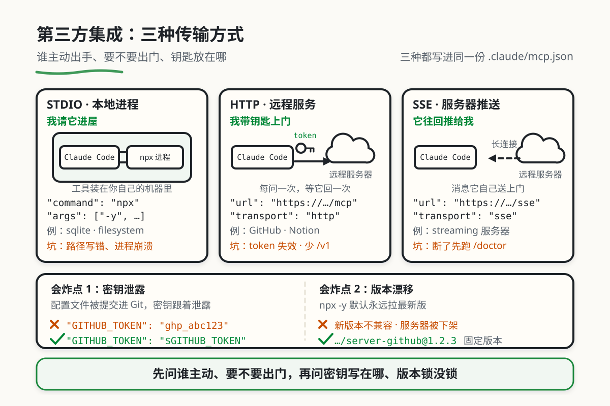

Claude Code MCP 完全指南
本章目录 · 11 节
什么是 Claude Code MCP？
Claude Code 是 Anthropic 官方推出的 AI 命令行工具，而 MCP（Model Context Protocol） 则是让 Claude Code 能够连接外部工具和服务的协议。
MCP 为 Claude Code 提供连接工具和数据源的统一方式。比如，接入数据库 MCP 服务器后，Claude Code 可以发现它提供的查询工具，再按工具定义发起调用。能执行哪些操作，取决于服务器提供的能力、账号权限和你的授权。
为什么需要在 Claude Code 中使用 MCP？
没有 MCP 的 Claude Code
Claude Code 已经可以读写项目文件、编辑代码和运行终端命令。如果环境中装好了 GitHub CLI、数据库客户端或其他工具，并配置了网络与凭据，它也可以通过这些工具访问外部服务。
有了 MCP 的 Claude Code
MCP 把服务提供的能力按统一协议接入，让 Claude Code 获取工具名称、参数和返回结果。按需要配置服务器后，可以进行 GitHub 操作、数据库查询、外部资料检索或浏览器自动化。
先看任务需要什么，再决定是否接 MCP。 已有命令行工具能完成的工作，可以继续使用；需要统一接入或使用某个 MCP 专属工具时，再添加对应服务器。
快速开始
步骤 1：了解配置文件位置
同一台电脑上，可以按使用范围保存 MCP 配置：
| 范围 | 配置文件路径 | 谁可以使用 |
|---|---|---|
local（默认） |
~/.claude.json 中当前项目的条目 |
仅你自己，仅当前项目 |
project |
项目根目录的 .mcp.json |
使用这份项目配置的团队成员 |
user |
~/.claude.json 顶层的 mcpServers |
仅你自己，所有项目 |
~ 表示当前用户的主目录。个人试用先选默认的 local；团队需要共享服务器定义时选 project。共享配置后，每个人仍需完成自己的认证，并确认是否信任这些服务器。
步骤 2：用自然语言添加 MCP 服务器
可以请 Claude Code 协助准备配置，但要给出服务的官方说明、安装范围和所需权限。示例提示词：
请根据这个服务的官方 MCP 文档，列出接入当前项目所需的步骤。
先说明服务器会读取哪些数据、能执行哪些操作。
我先个人试用，使用 local 范围；凭据由我在本机配置，不写进对话或共享文件。
完成后请给出连接状态和一次只读调用的实际结果。
也可以直接在终端添加服务器。下面以 Claude Code 官方文档提供的远程 MCP 服务为例：
claude mcp add --transport http claude-code-docs https://code.claude.com/docs/mcp
替换成其他服务时，使用该服务实际提供的 MCP 地址；普通 API 地址未必是 MCP 端点。需要认证的服务，按官方说明完成认证。
步骤 3：验证配置
在终端查看服务器列表：
claude mcp list
在 Claude Code 会话中输入：
/mcp
检查连接状态、可用工具和认证提示，再尝试一次只读调用。让 Claude Code 展示实际工具结果；仅看到“配置完成”的文字，不能证明连接和权限已经可用。/doctor 用于更广泛的安装与环境诊断。
步骤 4：开始使用
配置成功后，直接用自然语言调用 MCP 功能：
你：帮我在 GitHub 上创建一个 Issue
Claude：我可以帮你创建 GitHub Issue。请告诉我：
- 仓库地址（如 owner/repo）
- Issue 标题
- Issue 描述
Claude Code 的自然语言管理
查看和管理 MCP 服务器
你可以完全用自然语言与 Claude Code 交互：
你：列出所有已配置的 MCP 服务器
你：检查一下 MCP 服务器的连接状态
你：删除 notion 这个 MCP 服务器
你：更新 github 服务器的 token
诊断问题
当遇到问题时：
你：检查一下 MCP 连接有什么问题
Claude：[会自动运行诊断，分析配置文件，检查服务器状态]
配置方式详解
用户级配置（全局）
编辑 ~/.claude.json：
{
"mcpServers": {
"filesystem": {
"command": "npx",
"args": ["-y", "@modelcontextprotocol/server-filesystem", "/Users/yourname/Documents"]
},
"github": {
"command": "npx",
"args": ["-y", "@modelcontextprotocol/server-github"],
"env": {
"GITHUB_PERSONAL_ACCESS_TOKEN": "${GITHUB_PERSONAL_ACCESS_TOKEN}"
}
}
}
}
项目级配置（推荐）
编辑项目根目录的 .mcp.json：
{
"mcpServers": {
"project-db": {
"command": "npx",
"args": ["-y", "@modelcontextprotocol/server-sqlite", "--db-path", "./data/app.db"]
}
}
}
项目级配置优势：
- 团队成员可以共享配置（提交到 Git）
- 不同项目使用不同的 MCP 服务
- 配置更灵活，不会污染全局设置
传输方式配置
Claude Code 支持三种传输方式：

.mcp.json，接入后还要核对凭据、版本和实际调用结果。点图查看原尺寸STDIO（本地进程）
{
"mcpServers": {
"local-tool": {
"command": "npx",
"args": ["-y", "@modelcontextprotocol/server-filesystem", "/path"]
}
}
}
HTTP（远程服务）
{
"mcpServers": {
"remote-api": {
"url": "https://api.example.com/mcp",
"type": "http",
"headers": {
"Authorization": "Bearer ${API_TOKEN}"
}
}
}
}
SSE（服务器推送）
{
"mcpServers": {
"streaming": {
"url": "https://api.example.com/sse",
"type": "sse"
}
}
}
实战示例
示例 1：GitHub 工作流自动化
你：帮我把当前的修改推送到 GitHub，然后创建一个 PR，标题是"添加新功能"
Claude：
1. 检查当前 git 状态...
2. 创建新分支 feature/new-feature...
3. 提交更改...
4. 推送到远程...
5. 调用 github_create_pull_request 创建 PR...
6. PR 已创建：https://github.com/owner/repo/pull/123
示例 2：数据库查询
你：查询数据库中最近注册的 10 个用户
Claude：
1. 连接到 SQLite 数据库...
2. 执行查询：SELECT * FROM users ORDER BY created_at DESC LIMIT 10
3. 返回结果：
- 张三 (zhang@example.com) - 2025-02-28
- 李四 (li@example.com) - 2025-02-27
...
示例 3：网页截图分析
你：打开 https://example.com 并截图，分析一下页面设计
Claude：
1. 启动浏览器...
2. 导航到 https://example.com...
3. 截取屏幕...
4. [返回截图]
5. 页面设计分析：
- 布局采用居中设计，最大宽度 1200px
- 主色调为蓝色 (#3b82f6)
- 导航栏固定在顶部
...
示例 4：与 Notion 集成
你：把我刚才的笔记保存到 Notion
Claude：
1. 使用 Notion MCP 服务器...
2. 创建新页面...
3. 已保存：https://notion.so/page/xxx
调试技巧
使用自然语言诊断
遇到问题时，直接告诉 Claude Code：
你：我的 MCP 服务器连接不上了，帮我检查一下
你：GitHub MCP 工具调用失败，是什么原因？
你：为什么 sqlite 服务器一直显示连接中？
可以请 Claude Code 按以下顺序检查，并逐项给出实际结果：
- 检查配置文件格式
- 验证环境变量
- 测试服务器连接
- 提供具体的修复建议
常见问题排查
| 问题 | 可能原因 | 解决方案 |
|---|---|---|
| 服务器未连接 | 配置文件格式错误 | 检查 JSON 语法 |
| 工具无法调用 | 权限不足 | 检查环境变量 |
| 连接超时 | 网络问题 | 检查 URL 或网络 |
| 进程崩溃 | 服务器代码错误 | 查看服务器日志 |
手动诊断命令
在 Claude Code 中用 /mcp 查看 MCP 连接状态，遇到安装或运行环境问题再用 /doctor。也可以在终端执行 claude mcp list，检查实际读取到了哪些服务器。
把排查结果记成下面这样即可；这是记录格式示例，不是命令的固定输出：
服务器：项目数据库
连接状态：失败
实际报错：Database file not found
下一步：核对配置中的数据库路径，再重试连接
复测结果：填写实际结果
最佳实践
1. 项目级配置优先
为什么推荐项目级配置？
不同的项目往往需要不同的 MCP 服务。例如，前端项目可能需要浏览器测试工具，而后端项目则需要数据库连接。使用项目级配置可以让每个项目拥有自己专属的 MCP 服务器集合，避免全局配置的混乱。
项目级配置可以提交到 Git 仓库，团队成员复用同一份服务器定义。各自的认证、环境变量和首次信任确认仍要完成；共享文件里不要放真实密钥。
项目 A（前端项目）→ .mcp.json 包含浏览器测试 MCP
项目 B（后端项目）→ .mcp.json 包含数据库 MCP
2. 敏感信息环境变量化
永远不要在配置文件中硬编码密钥！
配置文件可能会被意外提交到 Git 仓库，导致密钥泄露。正确的做法是将敏感信息存储在环境变量中，配置文件只引用变量名。这样即使配置文件被公开，也不会暴露实际的密钥。
下面是 .mcp.json 中服务器配置的 env 字段片段，变量引用使用 ${变量名}：
{
"env": {
"GITHUB_TOKEN": "${GITHUB_TOKEN}"
}
}
启动 Claude Code 前，在本机环境中设置该变量。变量名称要与服务器要求一致；上例只演示引用方式，不是一份完整服务器配置。
本节配置范围、命令与变量语法参考 Claude Code MCP 官方文档及快速接入说明。
3. 版本锁定
为什么需要锁定版本？
npx -y 中的 -y 表示自动确认安装提示，不表示锁定版本。没有指定版本时，实际运行的包可能随本地环境或包发布状态变化，新版本也可能引入不兼容的更改。
在包名后添加 @版本号 可以固定服务器包版本。下面只演示格式，请把占位文字替换成真实包名与已验证的版本号；升级后仍要检查依赖和工具行为。
{
"command": "npx",
"args": ["-y", "包名@已验证的版本号"]
}
4. 文档化你的 MCP 配置
让团队成员快速理解 MCP 配置
当项目中有多个 MCP 服务器时，新成员可能不清楚每个服务器的用途和配置要求。在 .claude/ 目录下创建一个 README.md 文件，说明每个服务器的用途、所需的配置项以及获取方式，可以大大降低团队的沟通成本。
在项目中创建 .claude/README.md：
# MCP 配置说明
本项目使用的 MCP 服务器：
## github
用于自动化 GitHub 操作，需要配置 GITHUB_TOKEN。
## sqlite
连接到 ./data/app.db，用于查询和修改数据。
## puppeteer
用于 E2E 测试。
Claude Code vs Claude Desktop
| 特性 | Claude Code | Claude Desktop |
|---|---|---|
| 配置文件 | ~/.claude.json 或 .mcp.json |
claude_desktop_config.json |
| 项目级配置 | ✓ 支持 | ✗ 不支持 |
| 自然语言管理 | ✓ 支持 | ✗ 需手动编辑 |
| 连接检查 | /mcp 或 claude mcp list |
在应用设置与日志中检查 |
| 配置更新后 | 用 /mcp 确认是否生效，必要时重启会话 |
按当前版本的提示重新加载或重启 |
| 适用场景 | 开发工作流、CI/CD | 日常使用、办公 |
常用 MCP 服务器
💡 完整的 MCP 服务器列表请参考附录 MCP 服务器大全
GitHub 服务器
功能： Issues、PR、仓库管理
{
"mcpServers": {
"github": {
"command": "npx",
"args": ["-y", "@modelcontextprotocol/server-github"],
"env": {
"GITHUB_PERSONAL_ACCESS_TOKEN": "${GITHUB_PERSONAL_ACCESS_TOKEN}"
}
}
}
}
获取 Token： https://github.com/settings/tokens
SQLite 服务器
功能： 查询和管理 SQLite 数据库
{
"mcpServers": {
"sqlite": {
"command": "npx",
"args": ["-y", "@modelcontextprotocol/server-sqlite", "--db-path", "./data/database.db"]
}
}
}
文件系统服务器
功能： 访问指定目录的文件
{
"mcpServers": {
"filesystem": {
"command": "npx",
"args": ["-y", "@modelcontextprotocol/server-filesystem", "/Users/yourname/Documents"]
}
}
}
Puppeteer 浏览器自动化
功能： 浏览器控制、截图、自动化测试
{
"mcpServers": {
"puppeteer": {
"command": "npx",
"args": ["-y", "@modelcontextprotocol/server-puppeteer"]
}
}
}
Brave 搜索服务器
功能： 网络搜索
{
"mcpServers": {
"brave-search": {
"command": "npx",
"args": ["-y", "@modelcontextprotocol/server-brave-search"],
"env": {
"BRAVE_API_KEY": "your-brave-api-key"
}
}
}
}
参考资源
官方文档
官方服务器
- @modelcontextprotocol/server-github - GitHub 集成
- @modelcontextprotocol/server-sqlite - SQLite 数据库
- @modelcontextprotocol/server-postgres - PostgreSQL 数据库
- @modelcontextprotocol/server-filesystem - 文件系统访问
- @modelcontextprotocol/server-puppeteer - 浏览器自动化
- @modelcontextprotocol/server-fetch - 网页抓取
- @modelcontextprotocol/server-brave-search - Brave 搜索
- @modelcontextprotocol/server-git - Git 操作
教程文章
- 一文讲透 MCP 的原理及实践
- MCP（Model Context Protocol）架构与工作原理
- 2025 大模型最新教程：MCP 协议从入门到精通
- 从零开始学 MCP（八）- 构建一个 MCP server
配置指南
开发教程
- 零基础构建 MCP 服务器 TypeScript/Python 双语言实战指南
- 终极 MCP 服务器构建指南：TypeScript 与 Python 双版本完整教程
- 使用 TypeScript 构建一个最简单的 MCP 服务器
- 使用 Azure 容器应用生成 TypeScript MCP 服务器
MCP 服务器资源
- Awesome MCP Servers - 最全面的 MCP 服务器列表
- Official MCP Registry - Anthropic 官方「应用商店」
- MCP.so - 社区 MCP 服务器中心
- Glama.ai MCP - 带评分评论的 MCP 目录
- Smithery - MCP 服务器市场
- MCPHub - 界面简洁的目录
- LobeHub MCP - 中文 MCP 目录
地图和天气服务
社区资源
- Everything Claude Code Config - 生产级 Claude Code 配置集合
- AI Coding Guide - Claude Code 中文学习路径
实际应用案例
- BlenderMCP - AI 驱动的 3D 建模 - 4,100+ ⭐
- MCP 生产环境 15 条最佳实践